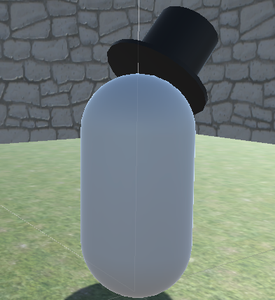

Story
The process began with brainstorming an idea. From the minute the project was announced some team members were bursting with ideas, others were more hesitant to share. I proposed a process wherein at our first meeting, we would all bring 1-2 concepts and propose them to the group. Then, after all were presented, we would each silently rank our top three choices and narrow down a selection from there. This was to ensure everyone’s thoughts were heard and no decisions were made by the loudest voice in the room. It worked out fantastically and we unanimously settled on the idea of Illuso, brought to life by the simple concept art one of the team members created.
Concept art by Alan Serna
Next, we had to figure out what this game was actually going to look like. At our first pass we envisioned a multi-level game wherein the character begins by making an escape from a jail cell, then running through a city environment dodging guards and acquiring abilities, and eventually hijacking a boat and escaping to an island. The island would implement a limited open world setting as well as facilitate a mechanic wherein the player could throw a card and possess an NPC animal. Finally, after acquiring more skills, you would return to the city, reverse your escape path, this time facing new puzzles in the same environment where you began the adventure, eventually making your way to the final boss where you would engage in an ‘epic battle’.
Some of the interactions we started to work out included whether or not there would be a health or an instant death mechanism, what powers the player would gain, how powers would be acquired and used, and what types of puzzles those powers might be used to overcome. We eventually drafted a proposal and I led the presentation to the TA. It was through this proposal process that we gathered feedback and realized that for a semester long project we would probably have to cut back the scope from three levels and a boss to something simpler, although it wasn’t until later that we actually defined our new goal as a single, very polished level.
Capture of initial brainstorming whiteboard
The next step was to begin developing the game, with an objective of an ‘early-demo’ to be presented in a few weeks taht would showcase basic game mechanics. We divided up the work and I was tasked with developing the card throwing mechanism which I implemented by (*warning we’re getting technical*) simply spawning a throwing card game object into the space directly in front of the player avatar in the direction the player was facing, and then applying a constant forward force to the card so that it would soar through space. The final task was to add a visual particle effect to the flying card to indicate its power (ice vs fire) to the user. In the end I was able to build this mechanic without too much trouble (the challenges associated with card orientation and momentum were actually pretty fun to solve) and I did so in such a way that it could easily be applied to any controllable character for easy integration with the other team members’ work.
Early development capsule avatar throwing a card with fire effect
During this initial working phase, the team-member who volunteered to develop the demo environment reached out to me and asked for help imagining what the world would look like, specifically how we should arrange the level. It was a spatial and visual reasoning challenge and something I was better suited for, so I sketched a simple map with some places for puzzles and initial ideas for how the pieces would fit together. I sent it off to him to build out.

Sketch of the first map concept
Eventually we met to compile our work and the first task was to drop all the pieces into the demo space. Except we were met with a challenge…no functioning demo space. The team member responsible for the environment went a little overboard trying to create a polished open-world type space using all sorts of pre-generated assets and unfortunately, the environment he brought to us was incompatible with the work we had all prepared and only seemed to function on his computer.
While beautiful, the environment was not compatible with the project
After a seemingly never-ending discussion on how to proceed, I took action and created a much simpler version of the environment just so that we could start compiling the work. Even though it was a simple stepping stone, I followed the same map I had originally sketched out and this eventually became the foundation for our final labyrinth level.
A view from above of the final map, notice parallels to the intial sketch
We got our work combined and functioning with a simple capsule as the playable character and presented our ‘alpha-demo’ to the professor and TA. They were impressed with our concept and implementation thus-far and offered suggestions on how to improve the experience, specifically by adding a more dynamic and interactive environment along with various elements of polish in the way of sounds and particle effects. They also suggested more interactions with the NPC AI, for example if a player threw a fire or ice card at the bunny NPCs they should react accordingly and freeze or run-away. We took their feedback enthusiastically and set out to create a plan of action and next steps with our goal to execute play testing by the end of the month.
(1) Guard NPC (2) A gathering of the bunny NPCs (3)A later implementation of the bunnies being frozen by the ice magic card
The next step of the project was shifting from our indistinct capsule avatar to a fully animated magician character. We began with a humanoid-bandit avatar which we animated with running, jumping, and throwing animations. Later, I came up with the final design for Illuso to be covered in patterns of playing cards to achieve a distinctly unique look for the player that matched the theme of the game.

Progression of Illuso character design
After we had a working avatar, we fleshed out the final puzzles and powers we wanted to include, one of which being an “invisible maze” which I completely designed and implemented. In this particular challenge, the player would be faced with a series of walls that only appeared when a magical card was thrown at them. Using their cards as a sort of visual echolocation players would have to navigate through winding pathways and dead ends to get a new “invisibility” power at the end of the maze. This power let them pass back through the walls of the maze unfettered and then sneak past a dragon in the final puzzle to complete the game.
(1) Illuso trying to make his way through the invisible maze (2) Once the invisibility ability is activated Illuso becomes a puff of grey smoke, which allows him to sneak past the dragon (3) The final key needed to escape the labyrinth
Once we had a functional game, we were tasked with executing play-testing. Similar to user testing performed in my HCI research methods course, I designed metrics and outlined a procedure for conducting think-aloud playtest, along with some follow up interview questions. Each team member went off and executed a playtest and we consolidated our results to actionable takeaways that we would incorporate in the final phase of development.
Playtest timing data
The final phase of development was all about polish. This is where we added sound effects, fleshed out interactions with NPCs, and performed our own comprehensive testing trying to break the game and eliminate any remaining bugs.


Whiteboard captures from the final polishing phase of the project
Once everyone was satisfied, we compiled our final game and I created a video ‘trailer’ and final presentation which I delivered to the class during our timeslot. Overall, I would call this project an absolute success. I learned a ton about Unity and feel confident programming in it, and we created a fairly cool game that the professor acclaimed as being one of the most complex and ambitious that he had seen in the course.
Game end screen